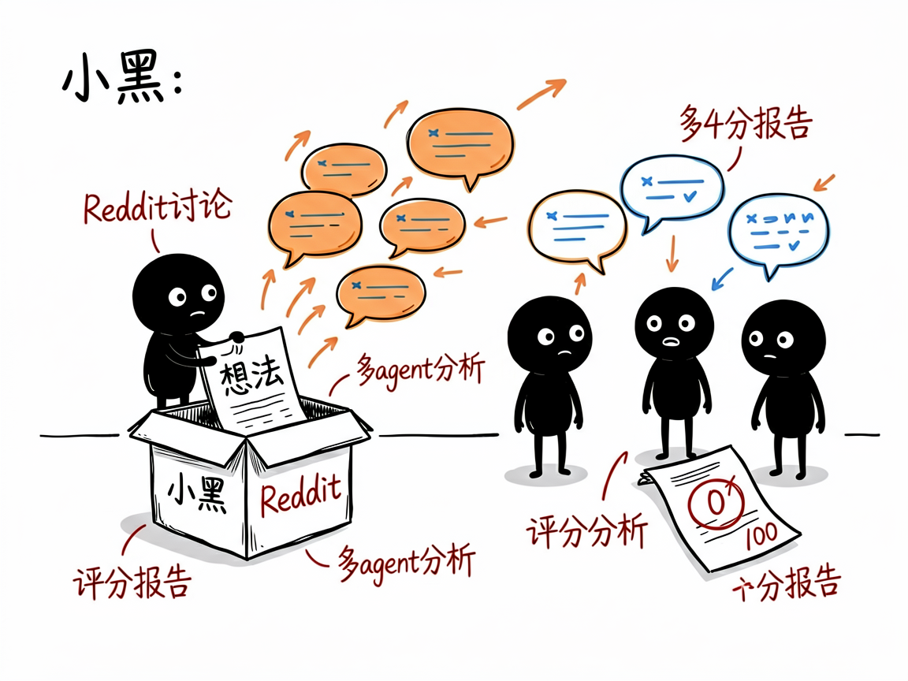
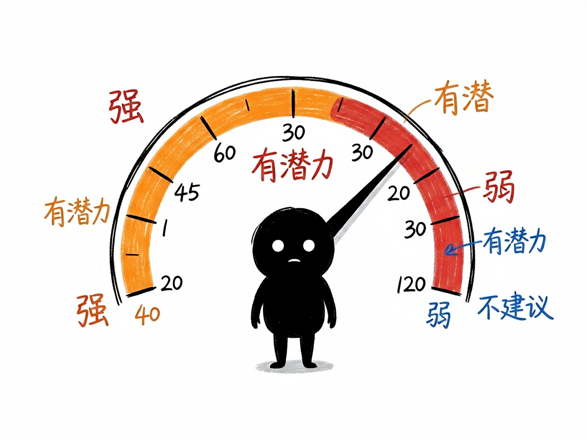

想做个生意但怕没人买单？让 Reddit 上的真人帮你投票 —— reddit-business-idea-validator 介绍
你想做个产品，比如"给独居老人做智能药盒"，但心里没底：美国人真有这需求吗？大家都在抱怨啥？现在有没有人已经在做了？你当然可以去 Reddit 翻，但几百万帖子里找信号，等于大海捞针，还容易只看得到自己想看的。
reddit-business-idea-validator 就是来解决这件事的。 你给它一个想法，它自动去 Reddit 抓相关帖子和评论，让多个 AI 一起分析，最后还你一份带 0–100 评分的报告，直说这个方向值不值得做。

它到底能做什么
- 验证想法：把你的创意当关键词，去 Reddit 找真人讨论，看有没有人关心。
- 挖痛点：从帖子和评论里提炼用户真正在抱怨什么、需要什么。
- 看竞品：现在大家都在用什么替代方案，市场饱不饱和。
- 找机会：哪些需求没被满足，你可以做差异化。
- 打分定性：给出 0–100 综合分（≥75 强、50–74 有潜力、30–49 弱、<30 不建议），一眼看懂。
- 出报告：报告含数据统计、核心痛点、现有方案、市场机会、行动建议、四象限评论标签分析和用户画像。

怎么用
你不需要记任何命令。在 codex / workbuddy 等 agent 装好 reddit-business-idea-validator 技能后，直接对 AI 说话就行：
场景 1：验证一个海外点子 你：我想做个给独居老人用的智能药盒，帮我在 Reddit 上看看美国人有没有这需求。 AI：它去 Reddit 抓相关帖子和评论，让多个 AI 分头分析痛点和竞品，最后给你一份带 0–100 评分的报告，直说这个方向值不值得做，还附上核心痛点和行动建议。
场景 2：重要决定前深查 你：这个SaaS点子我要认真评估，帮我深度查一下。 AI：它用更深的档位（耗时会更长）多抓多分析，把市场饱和度、现有替代方案、没被满足的需求都摸透，再给一个更稳妥的分数和判断。
场景 3：先看个热闹试水 你：我有个小想法，先随便看看有没有人讨论。 AI：它用轻量档位快速扫一遍，几分钟就告诉你"有没有人在聊、大概什么态度"，帮你低成本试水温。
谁适合用
- 想做海外/英文市场生意的人：Reddit 用户以欧美为主，最适合验证英文市场需求。
- 独立开发者和内容创业者：低成本验证"这个点子有没有人买单"。
- 做跨境电商、SaaS 的人：先看海外真实声音再决定投不投入。
一点说明
这是给 AI 助手用的技能，装好、接好 Reddit 的数据接口和兼容 OpenAI 的 AI 模型密钥后就能用（配置一次即可，你不用自己写代码）。另外，Reddit 在中国大陆访问受限，需要能正常访问 Reddit 的网络环境才能抓数据。它只覆盖 Reddit 这一个数据源、主要面向英文市场，不擅长小红书/抖音类国内数据，也不做纯关键词 SEO 那种事。分数是 AI 基于真实讨论打的，低分也是有用的负面信号，别只盯着高分看。